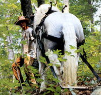
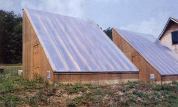
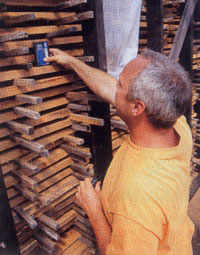

Dreaming of a new home or barn you can't quite afford? If you cut your own lumber using a portable sawmill, you could save enough to bring the project within reach. And you can use the mill to develop a business custom-cutting lumber or producing other wood products. (Or, after you've cut all the lumber you need, you could sell the mill.)
This special section outlines how to choose and use a portable mill to create value-added lumber and other products. Evenif you don't have your own forest, you cansalvage storm-damaged trees or harvest treesbeing removed when land is cleared forconstruction or farming (see "The Treeincarnaters" ).
When it comes to making money from lumber, it's all about value added," says Michael Best. "The further you take wood from a tree to a finished product, the more valuable it is."
Best is the executive director of the nonprofit Sustainable Mountain Agricultural Center near Berea, Kentucky. SMAC's mission is to demonstrate that sustainable agriculture is possible on small farms. "Farmers can make enough profit to avoid working outside the farm if they utilize the whole farm, including woodlots."
Initially, SMAC used its manually operated Wood-Mizer LT40 portable sawmill for on-farm use, cutting trees for tomato stakes, barn hoards and racks.
Will Johnson, president of TimberKing, a sawmill manufacturer, says about half of sawmill buyers get one for their own use. "Younger customers especially tend to buy a mill because they have one or two big projects in mind, and then get into custom cutting or into developing niche markets-which is where the real money is." Some niche markets are particularly valuable, he says. "If you find the right niche, such as cutting beams for custom homes, you can pay for the saw with just one or two jobs..
SMAC board member Carl Kilbourne, a former tree farmer and lumber dealer, was interested in the value-added aspect of turning hardwoods, which are abundant in the mountain regions of the south, into valuable kiln-dried lumber.
He found tree farming and managing small woodlots frustrating because timber cruisers are not interested in buying small, scattered stands of trees. And, he says, even if hardwood trees were cut, commercial woodkiln operators were only interested in processing large quantities of lumber, making it inconvenient and expensive to kiln-dry small batches.
"About a decade ago," he says, "I suddenly realized that the development of the one-man band sawmill and the inexpensive solar kiln were the major breakthroughs farmers with woodlots needed to harvest their valuable hardwood trees."
Kilbourne had more in mind than making small stands of hardwoods profitable. He wanted harvesting done in a manner that would improve, rather than degrade, the woodlots, turning them into self-sustaining crops. This philosophy ties right in with SMAC's mission.
Initially, Best hauled the portable sawmill to job sites, cutting lumber on either a per-board-foot or a by-the-hour basis. But he soon went to a stationary- setup at the SMAC farm. There are several reasons, he says, why this makes sense.
To price a job you have to see it, says Best, because of on-site concerns, such as safety issues, availability of bathroom facilities and the general condition of the work area. "Don't underplay that," he says. "In terms of money, log handling can make or break a job."
Often there isn't enough work to justify the trip. "Most cutting around here is either for people who have one, two or three logs, or for people who are buying logs. Neither of these provides an economic incentive to do most on-site work." For a full day's cutting, he says, it pays to haul the mill to the job site. Otherwise he has customers bring the logs to him.
"Most people start out using the portability function, but then go to a stationary setup for better control, safety and cleanliness of the logs," Johnson says.
Best designed SMAC's setup to combine the physical benefits of a raised-bed saw with the log-handling benefits of a ground-level bed. The saw is nested in a pit-like depression. The saw bed is even with the ground. Logs are then easily rolled over the ground onto the bed.
Before moving them, the logs are cleaned with a high-pressure hose. "There's nothing like crusted mud and imbedded forest duff to dull a blade," says Best. "And the time and cost of changing blades can cut into your profits."
Kilns are the next step in value added logging. Nothing adds profits to wood as dramatically as kiln-drying. "Typically," Best says, "simple cutting of lumber brings in about 16 cents per board foot. Kiln-drying that wood can add 20 cents to $1 per board foot, depending on the species and how thick you cut it." And because you can produce the same volume with less work, he says, the thicker the boards, the higher the profits.
SMAC used Wood-Mizer kits to build its own solar kilns, using its saw to cut all the structural members from its own woodlot. "Ironically," Best says, "when we checked with the folks at WoodMizer, we were the first people to actually cut our own dimensional lumber for the kiln."
SMAC built two 3,000-board-foot-ca pacify kilns. "They cost $4,300 each in materials to erect, plus labor, and take about three weeks to build with two semi-skilled builders," Best says. "After that, they run themselves." The only other equipment necessary, a moisture gauge, tells when to increase the fresh air ventilation and when the wood is dry enough to remove.
Although cutting is the first step in converting trees to value-added lumber, it's also the one that produces the lowest net profit. "Niche marketing is where the money is," Best says. Understanding the preferences and buying habits of potential buyers is essential to developing your markets. "It's not the act of cutting that makes you money. It's knowing how to cut it for people, and who to cut it for."
Rod Wilcox of Minong, Wisconsin, couldn't agree more. Unlike SMAC, which does strictly custom cutting Wilcox took another route when he started his sawmill business after 25 years as a logger. "About 90 percent of our business is cutting lumber from logs we buy." This, he says, is how you really serve niche markets. "We buy logs, saw them into boards and raise the value by getting closer to an end result. Using a niche marketing system, every part of the wood is used."
Before starting his business, he and his wife got phone directories from cities within 300 miles and called every company they could find that used wood products. "They were almost all real responsive, and were looking for stuff we could provide," he remembers. Wilcox also thought he might be able to sell wood blocks to carving-supply houses. "So I bought some carving magazines and started making calls. Most of the companies already had suppliers, but that day we became the supplier to two of them."
Wilcox's experience as a logger devel oped into another niche market: cutting staves for a barrel maker. "We used to sell them logs when I was logging," he says. "When they shut down their own sawing operation, they called me." Cutting staves led to the purchase of a kiln, which, in turn, opened up additional markets.
Diversification, Wilcox says, is a key to success. "We make enough products now that if the flooring or paneling market goes soft, we make it up with wood for cribbage boards or with handles for barbecue grills."
You have to learn the markets, he says. When Wilcox first started, he bought some aspens to practice on, and learned how to use his new TimberKing B-20. Figuring there was always a market for it, he fumed the logs into tongue-and-groove paneling. But aspen is too plain: People prefer paneling with some pattern in the grain. The aspen wood just sat. Finally he ran an ad, pricing the boards to sell.
"A couple drove up and bought the whole load to use in their business making wine racks," he says. At the time, clear aspen sold for $1.40 per board foot in lumber stores. "At our price of 75 cents, they could afford to cut off the tongues and grooves, and still be ahead of the game. If I had researched the markets first," he says. "I could have saved the labor of cutting the tongues and grooves, and sold the boards for $1.40.
The Wilcoxs reach out several hundred miles developing niche markets, but according to SMAC's Michael Best, most markets are generally within a hundred miles of the sawmill.
In conjunction with the University of Tennessee's Agricultural Development Center and funded through the U.S. Department of Agriculture's Sustainable Research and Education Program, SMAC recently conducted a survey to determine woodworkers' preferences and buying habits. Anyone contemplating making money with portable sawmills should read the study. Copies are available from the Sustainable Mountain Agricultural Center; 1033 Pilot Knob Cemetery Road: Berea, KY 40403; (859) 985-8648; www.heirlooms.org .
"How To Set Up and Run A Profitable Custom Sawing Business" is another great resource that covers everything from figuring profitability to how to write a contract. It's available from TimberKing; 1431 North Topping; Kansas City, MO 64120: (816) 483 0078; www.timberking.com .
Sawmill Sources
Bailey's
PO. Box 550
Laytonville, CA 95454
(800) 322-4539
www.bbaileys.com (circular)
Baker Products
P.O. Box 128
Ellington, MO 63638
(573) 663-7711
www.baker-online.com
Better Built Corp.
789 Woburn St.
Wilmington, MA 01887
(978) 657-5636
www.ripsaw.com
(hybrid)
Cook's SawmillManufacturing
160 Ken Lane
Newton, AL 36352
(800) 473-4804
www.cookssaw.com
Dave's Welding & Fabrication
11295 Yaak River Road
Troy, MT 59935
(406) 295-5040
www.timbergrizz.com
Granberg International
PO. Box 2347
Vallejo, CA 94592
(707) 562-2099
www.granberg.com
(chain)
Hud-Son Forest Equipment
PO. Box 345
Barneveld, NY 13304
(800) 765-7297
www.hud-son.com
Linn Lumber Mills
26380 Fern Ridge Road
Sweet Home, OR 97386
(541) 367-6900
www.linnlumber.com
Logosol Inc.
PO. Box 660
Madison, MS 39130
(877) 5646765
www.logosol.com (hybrid)
Log-Master
16576 Hwy. 259N
Nacogdoches,TX 75965
(800) 820-9515
www.logmaster.com
Meadows Mills
PO. Box 1288
N. Wilkesboro, NC 28659
(800) 626-2282
www.meadowsmills.com (circular)
Mighty Mite
PO. Box 20427
Portland, OR 97220
(503) 288-5923
www.mightymitesawmills.com
(circular)
Mobile Manufacturing Co.
798 NW Dunbar Ave.
Troutdale, OR 97060
(503) 666-5593
www.mobilemfg.com
(circular)
Norwood Industries
252 Sonwil Drive
Buffalo, NY 14225
(705) 689-2800
www.norwoodindustries.com
Quality Manufacturing Co.
1333 East Dominick St.
Rome, NY 13440
(800) 226-3645
www.bandmill.com
Select Sawmill Co.
5889 County Road
17 Plantagenet, Ontario K0B1 LO
(613) 6731267
www.selectsawmill.com
TA. Schmid Co.
PO. Box 6
W. Edmeston, NY 13485
(888) 858-8589
www.taschmid.com
Thomas Bandsaw Mitts
PO. Box 95
Brooks, ME 04921
(866) 722-3505
www.thomasbandsawmills.com
Tilton Equipment Co.
FO. Box 68 Rye, NH 03870
(800) 447-1152
www.tiltonequipment.com (chain)
TimberKin
g 1431 N. Topping
Kansas City, MO 64120
(800) 942-4406
www.timberking.com
Turner Band Sawmills
544 County Road 4
Oxford, NY 13830
(607) 843-7318
www.turnermills.com
Wizard Engineering
PO. Box 15
Sheep Ranch, CA 95250
(209) 728-3976
Wood-Mizer Products
8180 West 10th S.
Indianapolis, IN 46214
(800) 553-0182
www.wood-mizer.com
Except when noted, all companies listed above offer band sawmills.
|
 Tim Hensley and his Percheron gelding, Pappy, pull a log from the woods at the Sustainable Mountain Agricultural Center's field days near Berea, Kentucky. |
 For $1,695, this do-it-yourself solar kiln kit from Wood-Mizer includes the building plan, solar panel film, hardware and fans. |
 Michael Best of the Sustainable Mountain Agricultural Center uses a moisture gauge to check the wood in his solar powered wood kiln. |